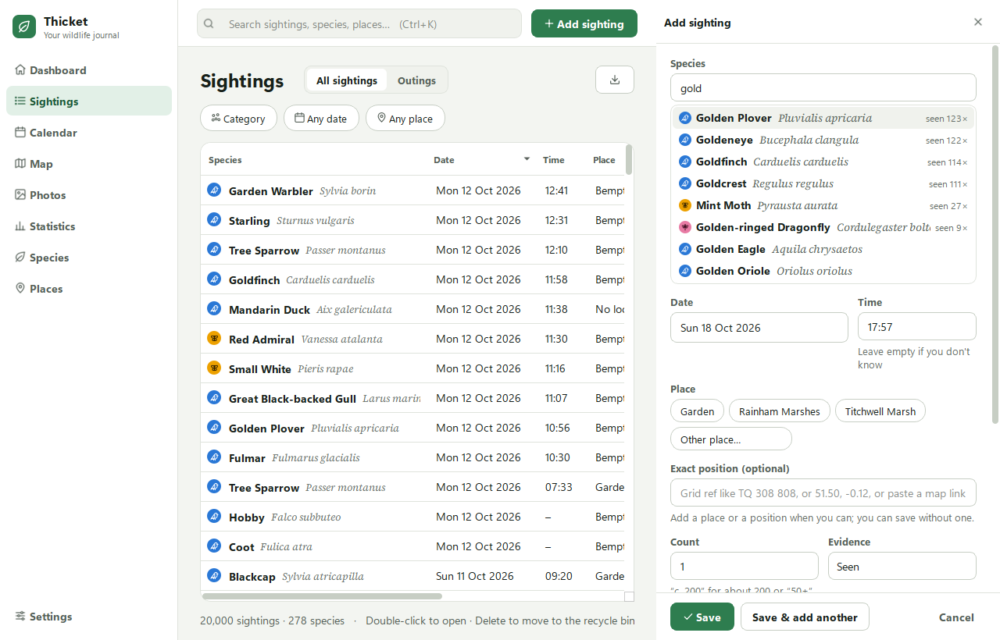
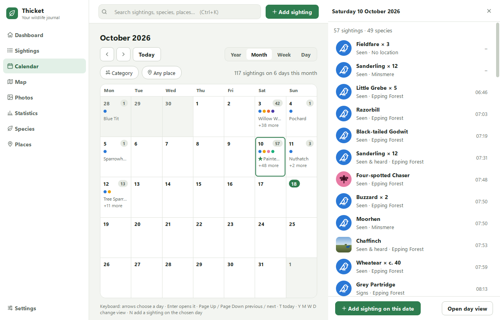
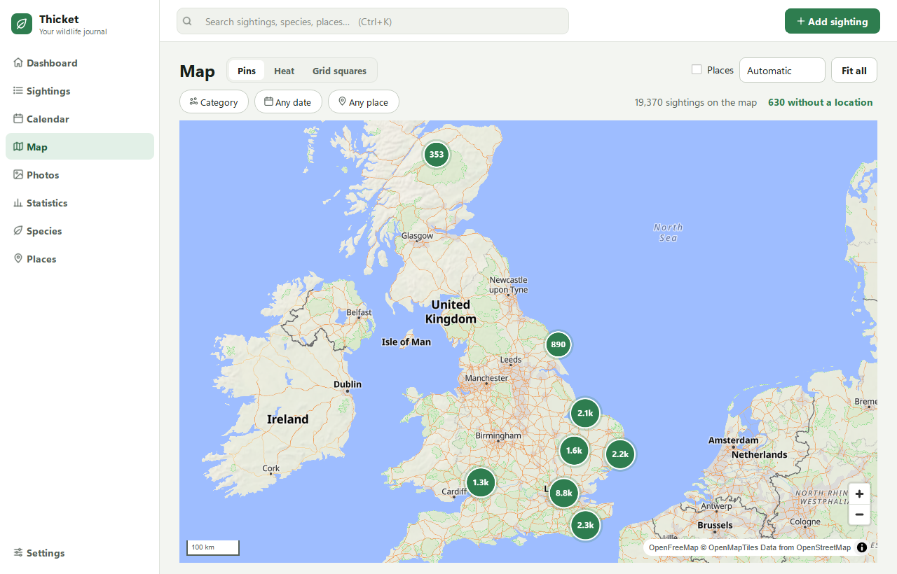
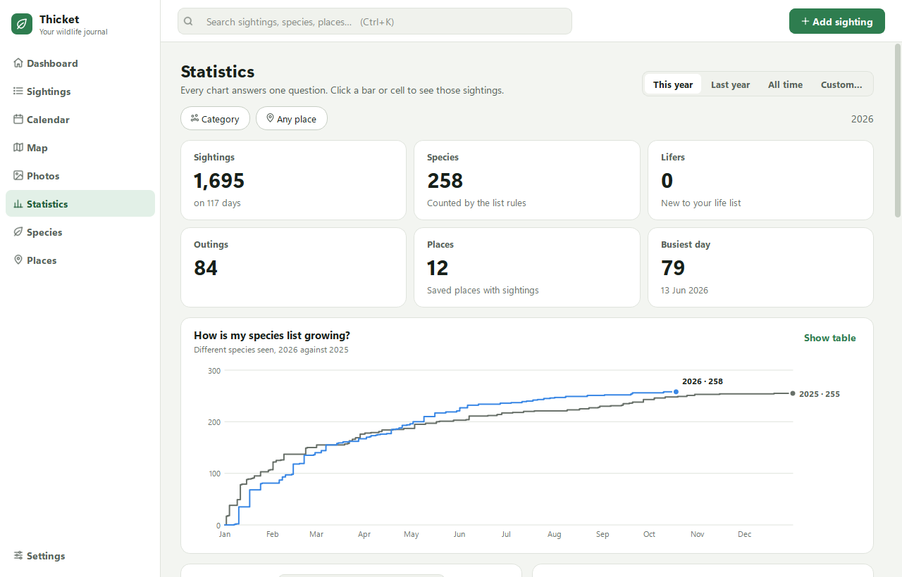
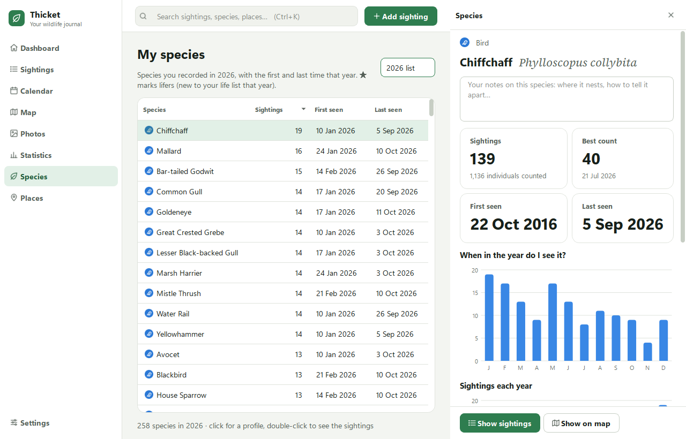
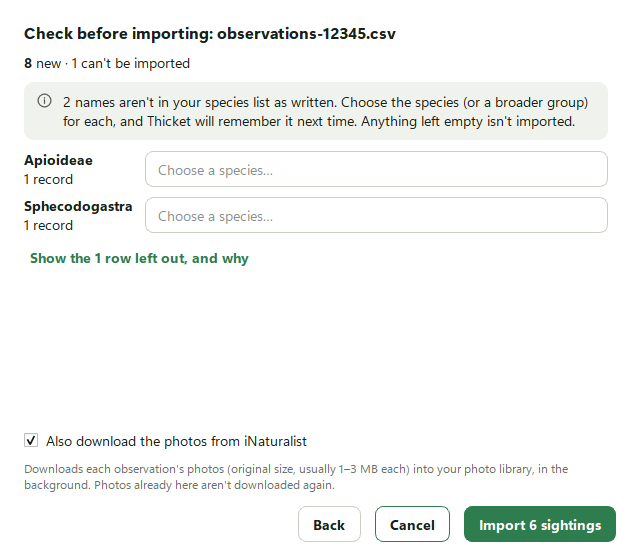

What Thicket does
A journal for everything you see: birds, mammals, insects, plants and fungi. Quick to fill in on the day, and a pleasure to look back through.
Record in seconds
Type a few letters and pick the species. The ones you see most come first, by common or scientific name.
- Today's date, the time and your last place are already filled in.
- Type "c. 40" for about 40, or "50+" for at least 50.
- Save & add another keeps the date and place for the next one.

See your year on a calendar
Flick through by year, month, week or day. Each day shows how much you saw and what kinds, and a click lists every sighting.
- Group a day out into an outing, with its weather.
- A star marks a species new to your life list.

Every sighting on a map
Pins for each sighting, a heat map of where you record most, or grid squares coloured by how many species you've found in each.
- Right-click anywhere to add a sighting there.
- Offline, your sightings still show on a plain outline map.

Statistics that answer questions
How is my species list growing? What do I see most? Where are my best places? Every chart answers one question.
- Compare this year with last year.
- Click a bar or a day to see the sightings behind it.

Your year lists and life list
Every species you've recorded, year by year, with when you first and last saw it.
- Open a species for its profile: best count, which months you see it, and your own notes.
- Shows scientific names alongside common ones.

Bring your records with you
Import an iNaturalist export, photos included, or any spreadsheet. You match its columns once, and Thicket checks everything before anything is saved.
- Names it doesn't recognise are asked about once, then remembered.
- Changed your mind? One click undoes the whole import.

And also
-
Photos
Drop in a folder from your camera or phone. Photos wait in an Inbox, grouped by time and place, until you turn them into sightings. Date and position come from the photos. RAW, JPEG and HEIC all work.
-
Backups
A verified backup every day and when you close Thicket, kept for a year. Restoring one takes a click. Deleted sightings wait in a recycle bin for 30 days.
-
UK and US species
The UK Species Inventory is built in. Each US state has a species pack from GBIF with the names people use there, downloaded inside the app.
-
Exports
Your records are yours: export to spreadsheet (CSV), JSON, Darwin Core or GeoJSON, with exact locations blurred if you like.
-
Search everything
Press Ctrl+K to find any species, place, note or date. Press ? for every keyboard shortcut.
-
Light and dark
Follows your Windows setting, or choose one. Everything works from the keyboard, and is labelled for screen readers.
Try it on your own sightings
Free, with no account. Your data stays on your PC.
Download for Windows